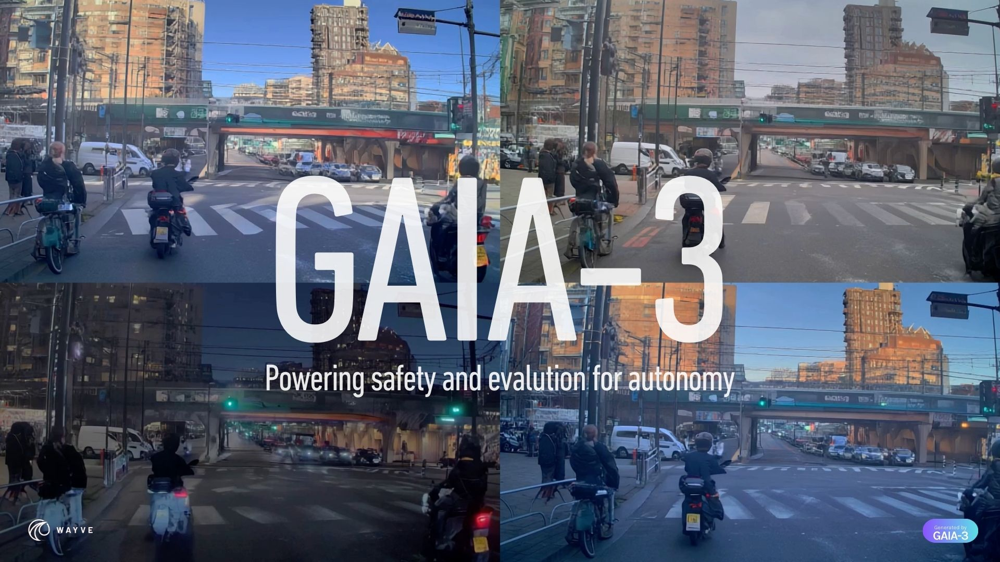

【ロンドン、2025年12月2日】エンボディドAIのリーダーであるWayveは本日、自律走行AIの評価・検証を加速するために設計された新世代の生成型ワールドモデル「GAIA-3」の発表を公式に発表した。GAIA-2の成功を礎として、この新モデルはより大規模かつ高性能であり、最新のエンドツーエンド自律走行システムの有意義な評価を可能にすることを目的として設計されている。

現実世界における安全上のリスクはまれであり、再現することも危険を伴う。現在のテストは主に管理されたテストコースでの実験に依存しており、現実の環境の複雑さを完全に再現することはできない。生成型ワールドモデルはこうした課題に対処するものであり、安全なAIの学習と意思決定のために動的な走行シナリオをシミュレートする。
自律走行システムの評価を大規模に実施することは、今日の自動運転開発における根本的な課題となっている。現実世界のテストは必要不可欠であるものの、コストがかかり、データ効率も低下しつつある。走行モデルの性能が向上するにつれ、統計的に意味のある結論を導くために必要な走行距離は急激に増加し、その大部分は安全上重要なまれな挙動についてほとんど情報をもたらさない。
既存のアプローチはこの課題に十分に対応できていない。手続き型シミュレータはリアリズムに欠け、3D再構成ベースのシミュレータは遮蔽物や動的エージェントの扱いに難がある。GAIA-3はリアリズムと制御性を兼ね備えたシミュレーションを実現することで、この課題を根本から解決しようとするものだ。
GAIA-3は潜在拡散ベースのワールドモデルであり、150億パラメータを持つ。GAIA-2と比較して以下の大幅な強化が施されている。
GAIA-3のコアとなる革新は「ワールドオンレールズ」アプローチにある。これにより、自車（エゴ車両）の走行軌跡を変化させながら、シーン内の他のすべての要素を完璧に一貫した状態に保つことができる。他のエージェントはそれぞれの動きを維持し、照明は変化せず、世界全体の整合性が保たれる。
GAIA-3は4つの主要な評価機能を新たに備えており、これにより自律走行AIの安全性検証が根本から変わる。
「もしも」というエッジケースを安全にオフラインでテストするため、現実的な反事実的クラッシュシナリオやニアミスシナリオを生成する。現実世界では遭遇頻度が低く再現も危険であるこうした状況を、高い制御性と再現性をもってシミュレートできる。
単一の記録済みシーケンスから、構造化された「what-if」のバリエーションを生成するスイートを構築できる。これにより、実世界での走行テストを大幅に削減しながら、多様な評価シナリオを体系的に網羅することが可能になる。
ペアとなるサンプルを必要とせず、新しいセンサー構成からシーンを再レンダリングすることで、異なる車両リグにわたる一貫した評価を実現する。これにより、特定のセンサー構成に依存することなく、異なる車両プラットフォームへの展開を効率的に評価できる。
変化する条件下でのロバスト性テストのため、基礎となるシーン構造を維持したままアピアランス（見た目）を変化させる制御された視覚的多様性を実現する。気象条件、照明環境、季節などの外的要因が変化した場合でも、AIが安定して機能するかを検証できる。
早期の研究によると、GAIA-3によるシミュレーションテストは実世界の走行結果と極めて近い相関を示しており、合成テストの棄却率を5分の1に削減したことが確認されている。これは、ワールドモデルベースの評価が現実世界のテストに匹敵する妥当性を持つことを示す重要な証拠だ。
「GAIA-3により、Wayveは大胆な一歩を踏み出しています。ワールドモデリングを視覚合成から真の自律走行評価・検証へと前進させています。このモデルは日常の交通から希少な安全上重要なイベントまで、現実世界の環境のダイナミクスを再現することを学習します。」
——ジェイミー・ショットン（Jamie Shotton）、Wayve チーフサイエンティスト
GAIA-3の開発は、ワールドモデリングを視覚合成のツールから、自律走行評価の基盤へと変革することを目指している。究極の目標は、生成型シミュレーションをエンボディドAI分野全体において進捗の測定と安全性の証明のための主要ツールとして確立することだ。
Wayveはウォーリック大学のウォーリック・マニュファクチャリング・グループ（Warwick Manufacturing Group）と連携し、英国政府が資金提供するプロジェクト「DriveSafeSim」に取り組んでいる。このプロジェクトでは、GAIA-3のような生成型ワールドモデルを安全評価に活用することの妥当性を検証することを目的としている。
DriveSafeSimは、業界・学術機関・政府が連携した取り組みであり、自律走行の安全評価手法としての生成型シミュレーションの標準化に向けた重要なステップとなる。
GAIA-2が主に走行シナリオの視覚的に高品質なシミュレーションを実現するものだったのに対し、GAIA-3は評価と検証のための能動的なツールへと進化している。この変化は単なるスケールアップではなく、ワールドモデルの役割そのものの再定義を意味する。
従来の自律走行評価では、稀なシナリオを現実世界で収集・再現することが極めて困難であった。GAIA-3はこの制約を打破し、安全上重要な状況を制御された形で大量に生成・評価できる基盤を提供する。これにより、自律走行システムの開発サイクルを大幅に短縮しながら、安全性の証明に必要な評価の包括性と深度を確保することが可能になる。
Wayveは今後、GAIA-3の効率化とリアルタイム生成に向けた取り組みを継続する方針だ。生成型シミュレーションがエンボディドAI分野全体にわたる進捗測定と安全性証明の主要ツールとして確立されることを目指しており、技術ブログでGAIA-3のアーキテクチャ、方法論、評価の詳細も公開している。
自律走行の安全評価における生成型ワールドモデルの活用は、業界全体の課題に対する有望なアプローチとして注目を集めており、GAIA-3の発表はこの分野における重要なマイルストーンとなる。